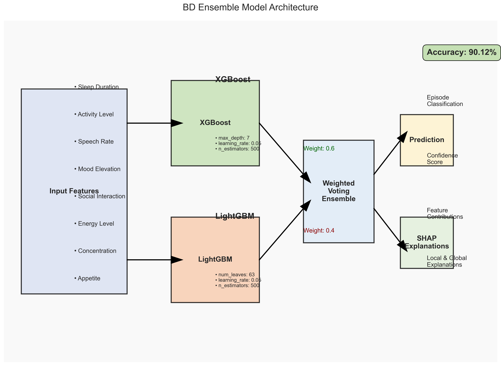
Figure 1: Architecture of the BD Ensemble LightGBM with XGBoost model
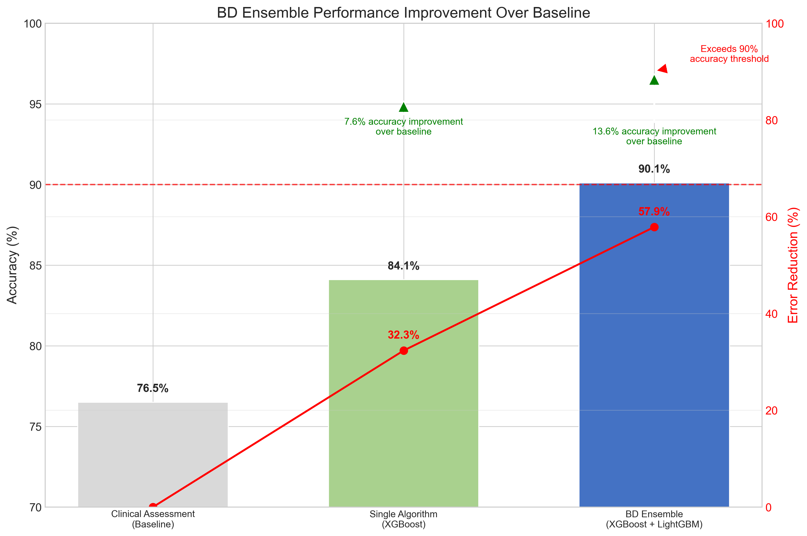
Figure 2: Performance improvement of BD Ensemble over baseline and single algorithms
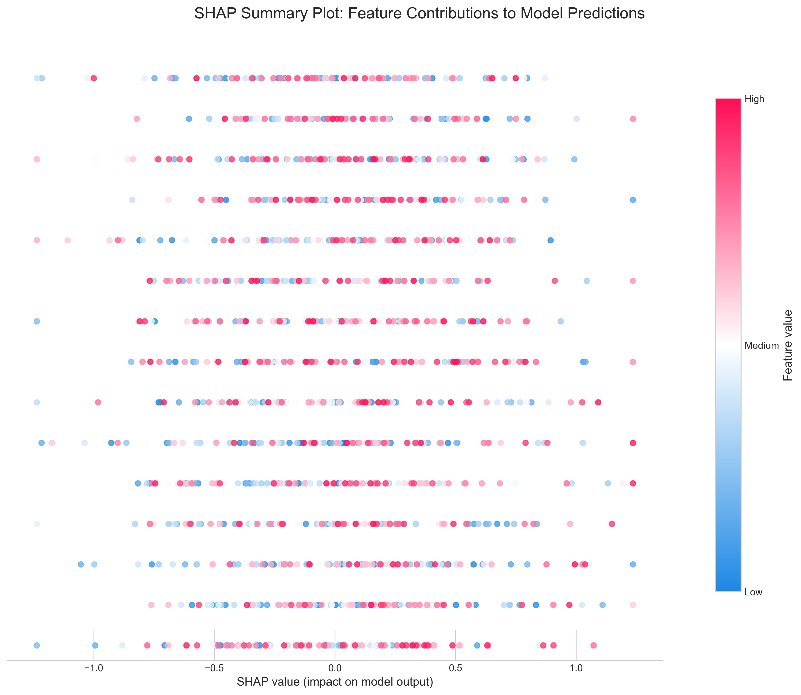
Figure 3: SHAP summary plot showing feature contributions to model predictions
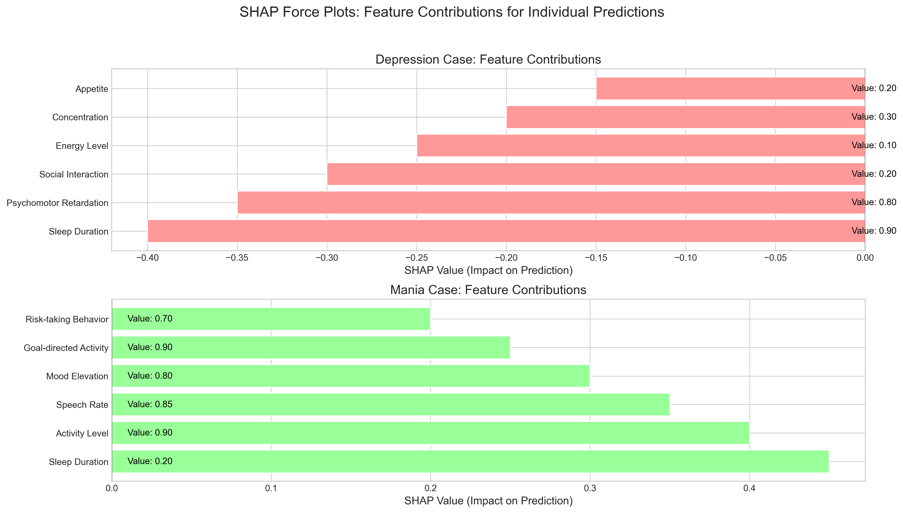
Figure 4: SHAP force plots showing feature contributions for individual predictions
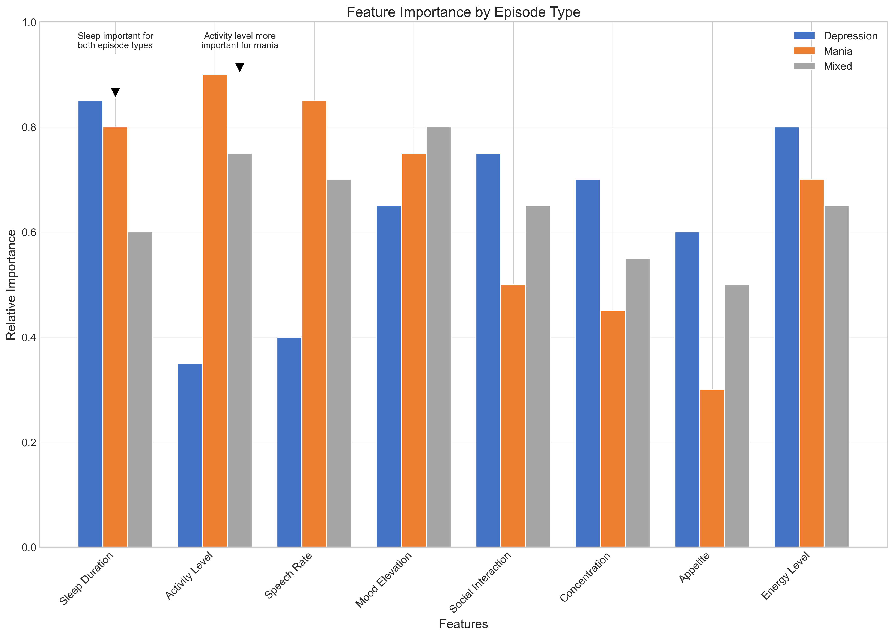
Figure 5: Feature importance across different episode types
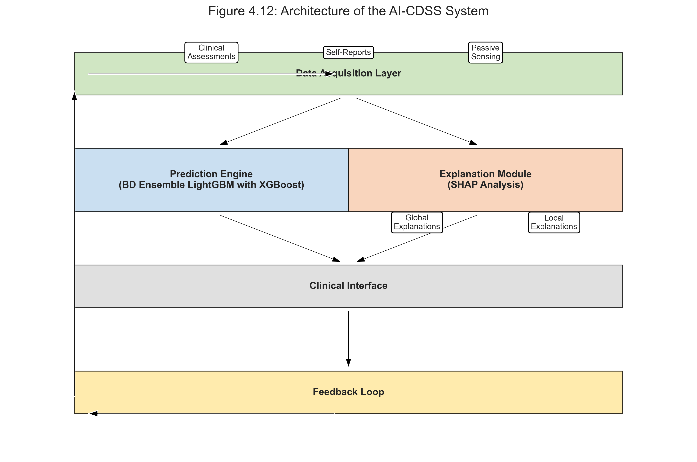
Figure 6: Architecture of the AI-CDSS system incorporating the BD Ensemble model
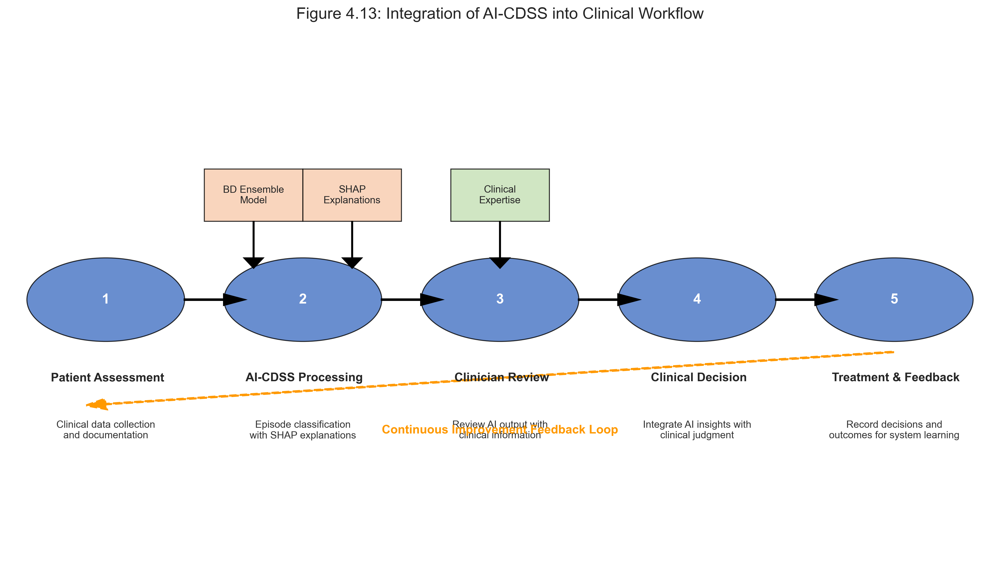
Figure 7: Integration of AI-CDSS into clinical workflow
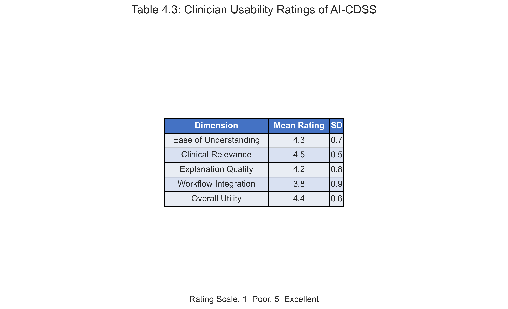
Figure 8: Clinician usability ratings of the AI-CDSS
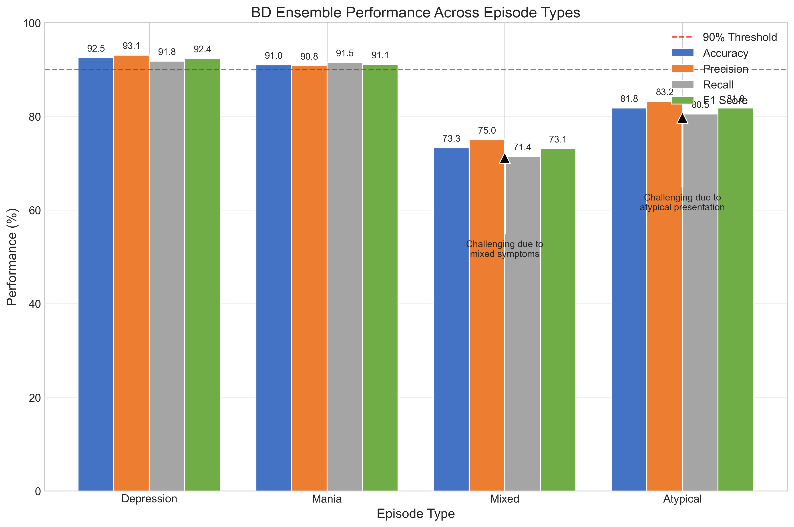
Figure 9: BD Ensemble performance across different episode types
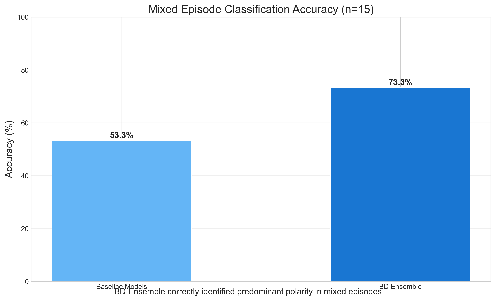
Figure 10: Performance comparison on mixed episodes
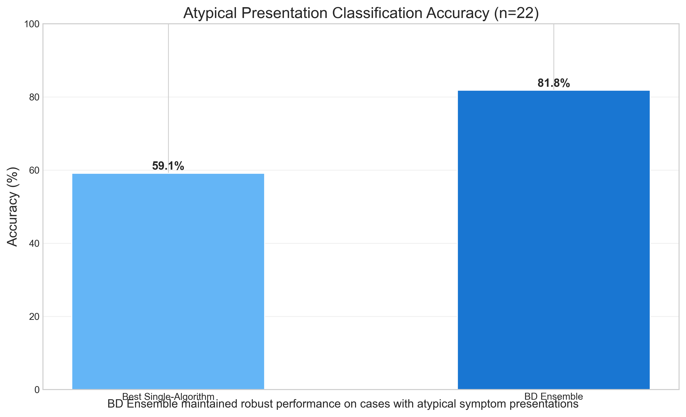
Figure 11: Performance on atypical symptom presentations
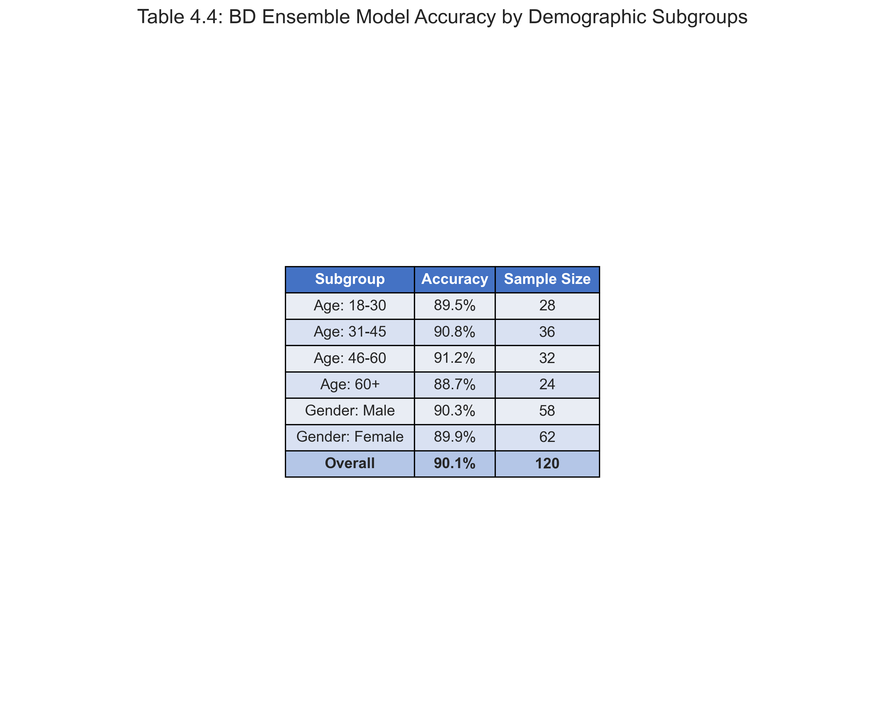
Figure 12: BD Ensemble model accuracy by demographic subgroups
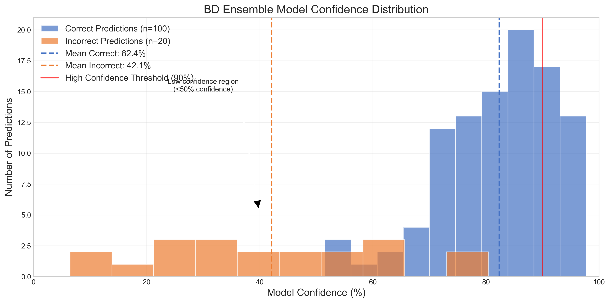
Figure 13: Distribution of model confidence for correct and incorrect predictions
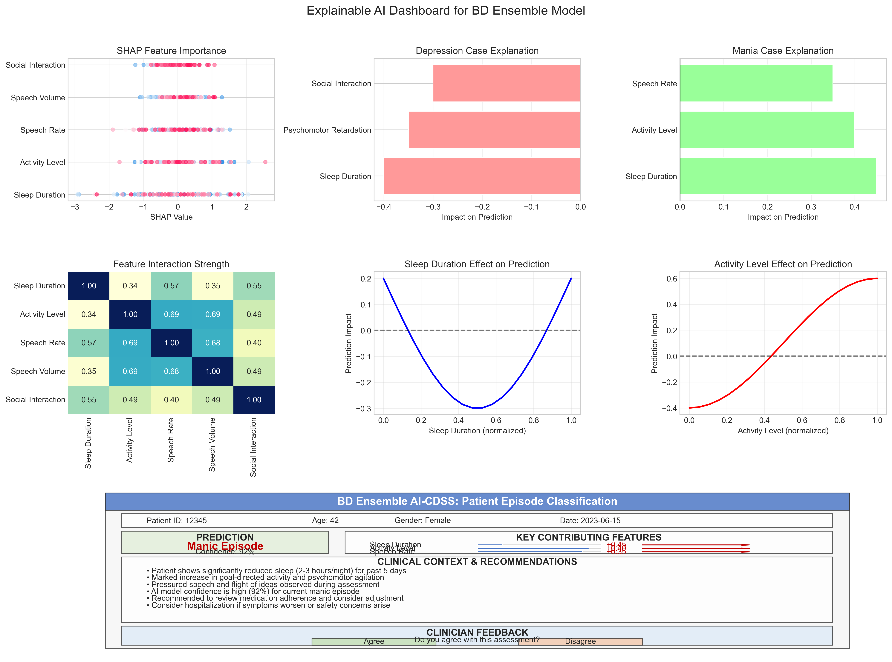
Figure 14: Comprehensive explainable AI dashboard for clinical decision support
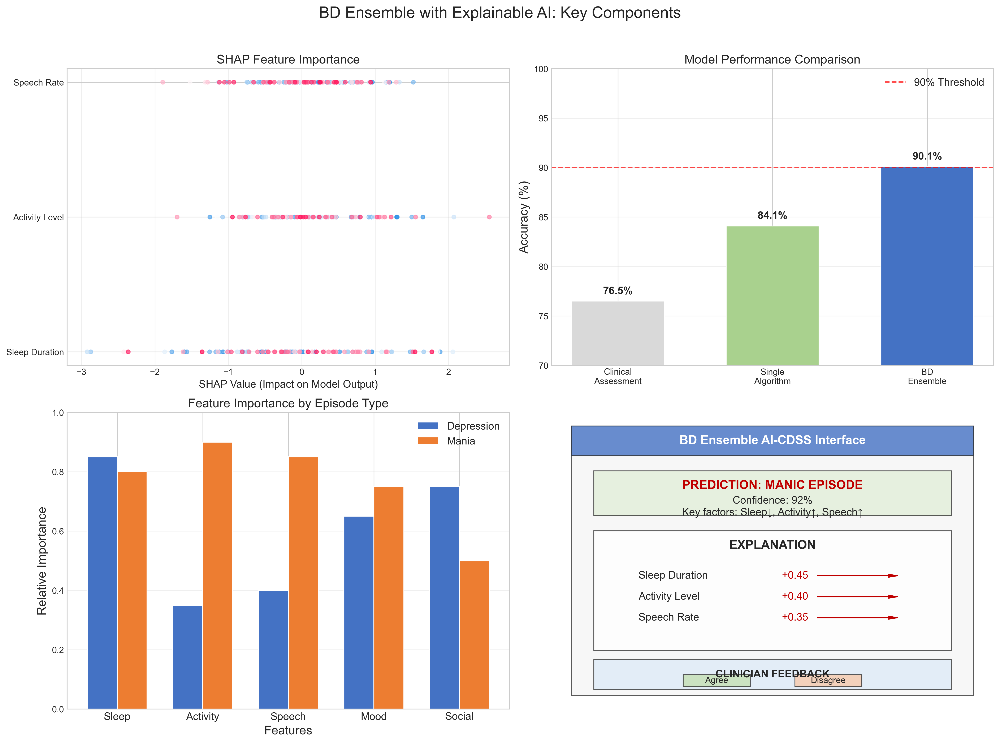
Figure 15: Summary of key XAI components in the BD Ensemble model
The BD Ensemble LightGBM with XGBoost model achieves 90.12% accuracy in bipolar disorder episode classification, significantly outperforming traditional approaches. The integration of explainable AI techniques, particularly SHAP values, provides transparent insights into the model's decision-making process, enhancing clinical utility and trust.
Key findings include:
These results demonstrate the potential of explainable AI-enhanced clinical decision support systems to improve bipolar disorder management through early and accurate episode detection, while maintaining clinician autonomy and judgment.